以下是可以在118.178.111.167 23333端口使用的先行卡的列表。下载补丁后即可使用。
使用方法：原版游戏下载补丁后解压至游戏文件夹，YGOMobile请自定义数据库（方法请查看压缩包内使用说明），暂不保证对其他版本的支持。
资料来源：任天堂世界论坛。
脚本作者：ygopro-pre-script，YGOPRO。目前所有脚本来自于以上这2个项目，在此对各自的贡献者表示感谢。
版权声明：转载请注明出自本页面，并完整保留附带的使用说明文档。如果您想对本项目进行修改，请移步这里，但我们建议您直接参与官方项目ygopro-pre-script。
星星和加号图标是Yusuke Kamiyamane的作品。
更新记录
- 2016-12-22 11:11
- 修复：白翼之魔术师灵摆效果选择不使用后不能再次使用的问题。
- 修复：幻煌之都 帕西菲斯在部分场合可以在已经特殊召唤了衍生物的场合发动②效果的问题。
- 2016-12-21 18:00
- 新卡：娱乐伙伴 小判龙、影灵衣巫女 艾莉娅儿。
- 修复：真龙骑将 得律阿斯3世会使魔法·陷阱卡也不能成为对象和破坏的问题。
- 修复：流星音击在不能进行战斗阶段的回合也能发动的问题。
- 2016-12-21 00:01
- 更新：优化部分卡图。
- 修复：试图融合霸王龙 扎克时可能崩溃的问题。
- 修复：急袭猛禽-异邦猎鹰种族错误的问题。
- 2016-12-20 11:26
- 修复：双头共鸣者墓地效果无效的问题。
- 2016-12-19 22:45
- 更新：霸王龙 扎克的处理。
- 修复：新卡列表中缺少的卡。
- 2016-12-19 22:29
- 更新：优化部分卡图。
- 修复：霸王龙 扎克的处理回退到上一个版本。
- 修复：同调呼唤的处理。
- 2016-12-19 14:47
- 修复：双头共鸣者①效果无效的问题。
- 2016-12-18 23:43
- 修复：天轮之双星道士特殊召唤的怪兽应为守备表示。
- 修复：白之衣在自己的所有怪兽攻击时都会发动效果的问题。
- 2016-12-18 23:25
- 新卡：诀别、双头共鸣者、宇宙耀变龙、急袭猛禽-异邦猎鹰。
- 2016-12-18 11:29
- 修复：真龙骑将 得律阿斯3世离场效果不能在伤害步骤发动的问题。
- 2016-12-18 11:26
- 修复：破坏龙 甘多拉-烈光闪不识别自身为甘多拉卡的问题。
- 修复：霸王门 零伤害变0效果无效的问题。
- 更新：同调呼唤的处理。
- 更新：霸王龙 扎克的处理。
- 2016-12-18 01:37
- 更新：优化部分卡图。
- 修复：真龙骑将 得律阿斯3世不识别旧「真龙」卡的问题。
- 修复：幽丽的幻泷发动提示问号的问题，和二效果无法使用的问题。
- 2016-12-17 19:48
- 新卡：PP19新卡5张，MACR新卡5张。
- 更新：优化部分卡图。
- 修复：霸王龙 扎克无法作为灵摆刻度灵摆召唤的问题。
- 修复：灵摆融合无法使用灵摆区素材融合始祖龙 古龙和凶饿毒融合龙的问题。
- 2016-12-17 17:47
- 修复：更新霸王龙 扎克的融合过程，尝试修复奇迹同调融合等卡出错的问题。
- 2016-12-17 14:54
- 修复：白之衣离场没有伤害的问题。
- 2016-12-17 14:34
- 修复：霸王龙 扎克可以用异色眼融合从额外卡组使用4个素材融合召唤的问题。
- 2016-12-17 14:07
- 修复：霸王门 无限特殊召唤的怪兽不能正常使用的问题。
- 2016-12-16 17:47
- 修复：幻煌龙的浸涡墓地效果无效的问题。
- 2016-12-16 16:45
- 新卡：白之衣。
- 更新：迪亚邦德之核上升攻击力应为600。
- 更新：优化部分卡图。
- 2016-12-16 15:45
- 修复：宙读之魔术士和刻读之魔术士不识别旧卡的「超量龙」「同调龙」「融合龙」字段的问题。
- 2016-12-16 15:07
- 修复：霸王眷龙 暗黑亚龙灵摆效果发动后不能特殊召唤其他属性怪兽的问题。
- 修复：更新霸王龙 扎克的融合过程，修复不能奇迹同调融合的问题。
- 2016-12-16 12:57
- 修复：幻煌之都 帕西菲斯衍生物效果无法发动的问题。
- 2016-12-16 12:36
- 修复：幻煌之都 帕西菲斯通常召唤和特殊召唤成功时可以各自发动一次效果的问题。
- 2016-12-16 11:30
- 修复：幻煌龙的战涡墓地效果无效的问题。
- 修复：流星音击不存在于墓地时也能代替解放的问题。
- 2016-12-16 09:36
- 修复：幻煌之都 帕西菲斯未被当作「海」的问题。
- 2016-12-16 09:18
- 修复：流星音击无法使用的问题。
- 修复：幻煌之都 帕西菲斯②效果发动时点错误的问题。
- 修复：幻煌龙的浸涡应为取对方场上怪兽为对象，修复墓地效果无效的问题。
- 2016-12-16 00:34
- 新卡：VJMP公布新卡共14张。
- 2016-12-12 11:58
- 修复：娱乐伙伴 机炮食尸鬼融合素材错误的问题。
- 2016-12-11 21:00
- 新卡：娱乐伙伴 机炮食尸鬼。
- 2016-12-10 19:30
- 修复：娱乐伙伴 天空魔术家发动的提示显示为问号的问题。
- 2016-12-10 13:47
- 修复：破坏龙 甘多拉-烈光闪效果无法使用的问题。
- 修复：娱乐伙伴 凶猛蔷薇怪兽效果无法使用的问题。
- 修复：宙读之魔术士在自己场上以外的卡被破坏时也能发动效果的问题。
- 2016-12-09 23:46
- 新卡：破坏龙 甘多拉-烈光闪、娱乐伙伴 歌谣蔷薇、娱乐伙伴 凶猛蔷薇、魔玩具·冒失鬼。
- 2016-12-07 13:11
- 修复：抒情歌鸲-吟诵椋鸟未被识别为抒情歌鸲卡的问题。
- 2016-12-05 23:44
- 更新：删除已经正式更新的卡。
- 修复：白翼之魔术师字段错误。
- 2016-12-02 16:14
- 修复：魔术师的再演②效果无效的问题。
- 2016-12-01 22:42
- 新卡：摩天一击、娱乐伙伴、DDD、魔术师等新卡共10张。
- 修复：迪亚邦德之核效果能多次发动的问题。
- 修复：真龙皇 法·王·兽会使不受效果影响的怪兽也不能发动效果的问题。
卡片列表
| 卡图 | 卡名 | 效果 |
|---|---|---|
| 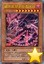 | 破坏龙 甘多拉-烈光闪 | [怪兽|效果] 龙/暗 [★8] 0/0 这张卡不能通常召唤。把这张卡以外的自己的手卡·场上2只怪兽送去墓地的场合可以特殊召唤。 ①：这张卡的攻击力上升除外中的卡数量×300。 ②：1回合1次，把基本分支付一半才能发动。自己墓地的「甘多拉」怪兽种类的以下适用。 ●1种类：这张卡以外的场上的卡全部破坏。 ●2种类：这张卡以外的场上的卡全部除外。 ●3种类以上：这张卡以外的双方的场上·墓地的卡全部除外。 |
| 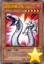 | 迪亚邦德之核 | [怪兽|效果] 恶魔/暗 [★5] 1800/1200 「迪亚邦德之核」的②的效果1回合只能使用1次。 ①：这张卡的攻击宣言时发动。这张卡的攻击力上升600。 ②：以对方场上1只表侧表示怪兽为对象才能发动。那只怪兽的攻击力直到回合结束时下降这张卡的攻击力数值。那之后，这张卡直到下个回合的准备阶段除外。这个效果在对方回合也能发动。 |
| 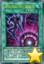 | 毁灭咒文-死亡终极咒 | [魔法|速攻] ①：自己场上有8星以上的魔法师族怪兽存在的场合才能发动。选场上1张卡里侧表示除外。 ②：魔法与陷阱区域的这张卡被对方的效果破坏的场合才能发动。从卡组把1只「黑混沌之魔术师」或者「混沌之黑魔术师」无视召唤条件特殊召唤。 |
| 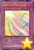 | 鹰身女妖的羽毛吹雪 | [陷阱] 自己场上有「鹰身」怪兽存在的场合，这张卡的发动从手卡也能用。 ①：自己场上有鸟兽族·风属性怪兽存在的场合才能发动。直到回合结束时，对方发动的怪兽的效果无效化。 ②：魔法与陷阱区域的这张卡被对方的效果破坏的场合才能发动。从自己的卡组·墓地选1张「鹰身女妖的羽毛扫」加入手卡。 |
| 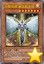 | 元素英雄 真诚新宇侠 | [怪兽|效果] 战士/光 [★7] 2500/2000 「元素英雄 真诚新宇侠」的①②的效果1回合各能使用1次，对方回合也能发动。 ①：把这张卡从手卡丢弃，以场上1只「英雄」怪兽为对象才能发动。那只怪兽的攻击力直到回合结束时上升2500。 ②：从手卡丢弃1只「英雄」怪兽才能发动。这张卡的攻击力直到回合结束时上升丢弃的怪兽的攻击力数值。 |
| 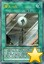 | 摩天一击 | [魔法] ①：以自己场上1只「元素英雄」融合怪兽为对象才能发动。比那只怪兽攻击力高的对方场上的表侧表示怪兽全部破坏。那之后，给与对方这个效果破坏送去墓地的怪兽之内原本攻击力最高的怪兽的那个数值的伤害。自己的场地区域有「摩天楼」场地魔法卡存在的场合，给与对方的伤害变成这个效果破坏送去墓地的怪兽全部的原本攻击力的合计数值。 |
| 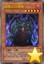 | 暗黑之召唤神 | [怪兽|效果] 恶魔/暗 [★5] 0/0 「暗黑之召唤神」的①的效果1回合只能使用1次。 ①：把这张卡解放才能发动。「神炎皇 乌利亚」「降雷皇 哈蒙」「幻魔皇 拉比艾尔」的其中1只从手卡·卡组无视召唤条件特殊召唤。这个回合，自己怪兽不能攻击。 ②：把墓地的这张卡除外才能发动。从卡组把「神炎皇 乌利亚」「降雷皇 哈蒙」「幻魔皇 拉比艾尔」的其中1只加入手卡。 |
| 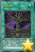 | 失乐园 | [魔法|场地] 「失乐园」的②的效果1回合只能使用1次。 ①：只要这张卡在场地区域存在，自己的怪兽区域的「神炎皇 乌利亚」「降雷皇 哈蒙」「幻魔皇 拉比艾尔」「混沌幻魔 阿米泰尔」不会成为对方的效果的对象，不会被对方的效果破坏。 ②：自己的怪兽区域有「神炎皇 乌利亚」「降雷皇 哈蒙」「幻魔皇 拉比艾尔」「混沌幻魔 阿米泰尔」的其中任意种存在的场合才能发动。自己从卡组抽2张。 |
| 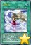 | 白之衣 | [魔法|装备] ①：装备怪兽进行战斗的场合，对方直到伤害步骤结束时魔法·陷阱卡不能发动。 ②：装备怪兽进行战斗的攻击宣言时发动。对方场上的表侧表示的魔法·陷阱卡的效果直到伤害步骤结束时无效化。 ③：装备怪兽战斗破坏对方怪兽时才能发动。对方场上的魔法·陷阱卡全部破坏。 ④：魔法与陷阱区域的表侧表示的这张卡从场上离开时自己受到3000伤害。 |
 | 宇宙耀变龙 | [怪兽|效果|同调] 龙/风 [★12] 4000/4000 同调怪兽调整＋调整以外的同调怪兽2只以上 这张卡不用同调召唤不能特殊召唤。 ①：可以把场上的这张卡直到结束阶段除外从以下效果选择1个发动。 ●对方把魔法·陷阱·怪兽的效果发动时才能发动。那个发动无效并破坏。 ●对方把怪兽召唤·反转召唤·特殊召唤之际才能发动。那个无效，那些怪兽破坏。 ●对方怪兽的攻击宣言时才能发动。那次攻击无效，那之后战斗阶段结束。 |
 | 流星音击 | [魔法|速攻] ①：以自己场上1只「星尘」同调怪兽为对象才能发动。这个回合，那只自己的同调怪兽和对方怪兽进行战斗的场合，伤害步骤开始时那只对方怪兽回到持有者卡组。 ②：自己场上的「星尘」同调怪兽为让效果发动而把自身解放的场合，可以作为代替把墓地的这张卡除外。 |
 | 弯月罩 | [魔法|速攻] ①：怪兽的攻击无效时，可以从以下效果选择1个发动。 ●变成这个回合的结束阶段。 ●以自己场上1只「希望皇 霍普」超量怪兽为对象才能发动。那只怪兽的攻击力直到回合结束时变成原本攻击力的2倍。 ②：自己场上的「希望皇 霍普」超量怪兽把超量素材1个取除来让效果发动的场合，可以作为取除的超量素材的代替而把墓地的这张卡除外。 |
 | 螺旋之强袭炸裂 | [魔法] ①：可以从以下效果选择1个发动。 ●自己场上有「异色眼」卡存在的场合，以场上1张卡为对象才能发动。那张卡破坏。 ●从卡组的怪兽以及自己的额外卡组的表侧表示的灵摆怪兽之中选1只7星「异色眼」怪兽加入手卡。 |
| 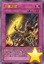 | 力量之壁 | [陷阱] ①：对方怪兽的攻击要让自己受到战斗伤害的伤害计算时才能发动。直到那次战斗发生的对自己的战斗伤害变成0为止把每500伤害1张卡从自己卡组上面送去墓地。 |
| 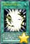 | 炽热的决斗者们 | [魔法|永续] ①：自己怪兽的攻击宣言时，以对方场上1张魔法·陷阱卡为对象才能发动。那次攻击无效，作为对象的卡破坏。 ②：只要这张卡在魔法与陷阱区域存在，双方1回合只能有1张魔法·陷阱卡从手卡盖放，从额外卡组特殊召唤的怪兽在那个回合不能攻击。 ③：自己抽卡阶段的抽卡前才能发动。作为这个回合进行通常抽卡的代替，选自己墓地1只怪兽加入手卡。 |
| 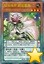 | 娱乐伙伴 歌谣蔷薇 | [怪兽|效果|灵摆] 植物/地 [★3] 500/1100 2/2 ←2 【灵摆】 2→ ①：1回合1次，自己的「娱乐伙伴」怪兽和对方的表侧表示怪兽进行战斗的伤害步骤开始时才能发动。那只对方怪兽的攻击力下降600。 【怪兽效果】 ①：自己的「娱乐伙伴」怪兽攻击的伤害计算后，以对方场上1只表侧表示怪兽为对象才能发动。那只对方怪兽的攻击力下降那只「娱乐伙伴」怪兽的攻击力数值。 |
| 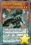 | 娱乐伙伴 凶猛蔷薇 | [怪兽|效果|灵摆] 植物/地 [★3] 500/1100 5/5 ←5 【灵摆】 5→ ①：1回合1次，自己的「娱乐伙伴」怪兽和对方怪兽进行战斗的伤害计算前才能发动。那只对方怪兽的攻击力下降和那个原本攻击力的相差数值。 【怪兽效果】 「娱乐伙伴 凶猛蔷薇」的怪兽效果1回合只能使用1次。 ①：以持有和原本攻击力不同攻击力的1只「娱乐伙伴」怪兽为对象才能发动。那只怪兽的攻击力直到回合结束时上升和那个原本攻击力的相差数值。这个效果在对方回合也能发动。 |
| 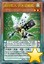 | 疾行机人 多米诺蝴蝶 | [怪兽|效果|调整|灵摆] 机械/风 [★2] 100/300 8/8 ←8 【灵摆】 8→ 「疾行机人 多米诺蝴蝶」的②的灵摆效果1回合只能使用1次。 ①：自己不是风属性怪兽不能灵摆召唤。这个效果不会被无效化。 ②：从手卡丢弃1只风属性怪兽，以除外的1只自己的风属性怪兽为对象才能发动。那只怪兽加入手卡。 【怪兽效果】 把这张卡作为同调素材的场合，不是龙族·机械族的风属性怪兽的同调召唤不能使用。从额外卡组特殊召唤的这张卡被同调召唤使用的场合除外。 |
| 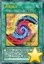 | 灵摆融合 | [魔法] 「灵摆融合」在1回合只能发动1张。 ①：融合怪兽卡决定的融合素材怪兽从自己场上送去墓地，把那1只融合怪兽从额外卡组融合召唤。自己的灵摆区域有2张卡存在的场合，自己的灵摆区域存在的融合素材怪兽也能作为融合素材使用。 |
| 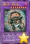 | 魔玩具·冒失鬼 | [怪兽|效果|融合] 恶魔/暗 [★8] 3000/2200 「锋利小鬼」怪兽＋「毛绒动物」怪兽 「魔玩具·冒失鬼」的②的效果1回合只能使用1次。 ①：这张卡战斗破坏对方怪兽时才能发动。给与对方1000伤害。 ②：表侧表示的这张卡因对方的效果从场上离开的场合或者被战斗破坏的场合才能发动。给与对方为自己墓地的「魔玩具」怪兽数量×500伤害。 |
| 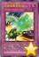 | 急袭猛禽复制品 | [陷阱] 这张卡在规则上也当作「急袭猛禽」卡使用。 ①：以自己场上1只「急袭猛禽」怪兽为对象才能发动。那1只同名怪兽从卡组特殊召唤。只要这个效果特殊召唤的怪兽在自己场上表侧表示存在，对方不能把作为对象的怪兽作为攻击对象，也不能作为效果的对象。 |
| 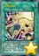 | 连锁召唤 | [魔法] ①：自己场上有超量怪兽2只以上存在的场合，以那之内的1只阶级最低的超量怪兽为对象才能发动。比那只超量怪兽阶级低的1只超量怪兽从额外卡组特殊召唤。这个效果特殊召唤的怪兽不能直接攻击，结束阶段回到额外卡组。 |
| 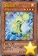 | 雷电哥哥 | [怪兽|效果] 雷/光 [★4] 900/400 ①：这张卡召唤成功时才能发动。从卡组把「雷电哥哥」以外的1只雷族·光属性·4星怪兽加入手卡。 |
| 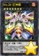 | No.28 巨神蛾 | [怪兽|效果|超量] 昆虫/炎 [☆7] 2400/2200 7星怪兽×2 ①：自己场上没有这张卡以外的怪兽存在的场合，这张卡可以直接攻击。那次直接攻击给与对方的战斗伤害变成一半。 ②：这张卡给与对方战斗伤害时，把这张卡1个超量素材取除才能发动。给与对方为对方手卡数量×500伤害。 |
| 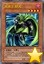 | 风来王 野风 | [怪兽|效果] 恶魔/暗 [★4] 1700/1300 ①：自己场上有攻击力1500以下的恶魔族调整存在的场合，这张卡可以从手卡特殊召唤。这个方法特殊召唤过的回合，自己不是同调怪兽不能从额外卡组特殊召唤。 ②：把墓地的这张卡除外才能发动。从卡组把1只攻击力1500以下的恶魔族调整加入手卡。这个效果在这张卡送去墓地的回合不能发动。 |
| 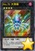 | No.70 大罪蛛 | [怪兽|效果|超量] 昆虫/暗 [☆4] 2400/1200 4星怪兽×2 ①：1回合1次，把这张卡1个超量素材取除，以对方场上1只怪兽为对象才能发动。那只怪兽直到下次的对方准备阶段除外。 ②：这张卡攻击的伤害步骤结束时才能发动。这张卡的攻击力上升300，阶级上升3阶。 |
| 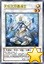 | 天轮之双星道士 | [怪兽|效果|调整|同调] 天使/光 [★2] 100/800 调整＋调整以外的怪兽1只 「天轮之双星道士」的效果1回合只能使用1次。 ①：这张卡同调召唤成功时才能发动。从自己的手卡·墓地选最多4只调整以外的2星怪兽守备表示特殊召唤。这个效果特殊召唤的怪兽的效果无效化。这个效果的发动后，直到回合结束时自己不是同调怪兽不能从额外卡组特殊召唤。 |
 | 英雄的遗产 | [魔法] 「英雄的遗产」在1回合只能发动1张。 ①：让需以「英雄」怪兽为融合素材的2只融合怪兽从自己墓地回到额外卡组才能发动。自己从卡组抽3张。 |
| 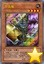 | 牛头鬼 | [怪兽|效果] 不死/地 [★4] 1700/800 「牛头鬼」的①②的效果1回合各能使用1次。 ①：自己主要阶段才能发动。从卡组把1只不死族怪兽送去墓地。 ②：这张卡被送去墓地的场合，从自己墓地把「牛头鬼」以外的1只不死族怪兽除外才能发动。从手卡把1只不死族怪兽特殊召唤。 |
| 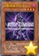 | 幻影英雄 仿生人 | [怪兽|效果] 战士/暗 [★4] 1000/1200 「幻影英雄 仿生人」的①的效果1回合只能使用1次。 ①：这张卡召唤·特殊召唤成功的场合才能发动。从卡组把1只「英雄」怪兽送去墓地。 ②：1回合1次，从自己墓地把1只「英雄」怪兽除外才能发动。从卡组把1张「融合」加入手卡。 |
| 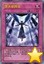 | 堕天使降临 | [陷阱] ①：把基本分支付一半才能发动。选对方场上1只表侧表示怪兽，从自己墓地选和那只怪兽相同等级的最多2只「堕天使」怪兽守备表示特殊召唤。 |
| 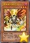 | 堕天使 乌科巴克 | [怪兽|效果] 天使/暗 [★3] 700/1000 「堕天使 乌科巴克」的效果1回合只能使用1次。 ①：这张卡召唤·特殊召唤成功的场合才能发动。从卡组把1张「堕天使」卡送去墓地。 |
| 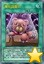 | 魔玩具重织 | [魔法] ①：以自己墓地1只「魔玩具」怪兽为对象才能发动。那只怪兽特殊召唤。 ②：把墓地的这张卡除外，以除外的1只自己的「毛绒动物」怪兽或者「魔玩具」怪兽为对象才能发动。那只怪兽回到墓地。这个效果在这张卡送去墓地的回合不能发动。 |
| 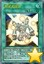 | 死灵式同调 | [魔法] ①：从自己墓地选调整1只和调整以外的怪兽最多2只除外，把持有和除外的怪兽的等级合计相同等级的1只「星尘」同调怪兽从额外卡组当作同调召唤作特殊召唤。这个效果特殊召唤的怪兽的效果无效化。 |
| 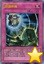 | 同调呼唤 | [陷阱] ①：以自己墓地1只怪兽为对象才能发动。那只怪兽效果无效特殊召唤，只用包含那只怪兽的自己场上的怪兽为素材把1只龙族·恶魔族的暗属性同调怪兽同调召唤。 |
| 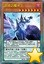 | 宙读之魔术士 | [怪兽|效果|灵摆] 魔法师/暗 [★7] 2500/2000 1/1 ←1 【灵摆】 1→ 「宙读之魔术士」的灵摆效果1回合只能使用1次。 ①：自己主要阶段才能发动。这张卡破坏，从手卡·卡组选1只「星读之魔术师」在自己的灵摆区域放置或特殊召唤。 【怪兽效果】 ①：自己场上的卡被战斗·效果破坏的场合才能发动。这张卡从手卡特殊召唤。那之后，可以选这个回合被破坏的1只怪兽，那1只同名怪兽从卡组加入手卡。 ②：把场上的这张卡除外，从自己的手卡·场上·墓地把「灵摆龙」「超量龙」「同调龙」「融合龙」怪兽各1只除外才能发动。把1只「霸王龙 扎克」当作融合召唤从额外卡组特殊召唤。 |
| 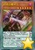 | 刻读之魔术士 | [怪兽|效果|灵摆] 魔法师/暗 [★6] 2000/1700 8/8 ←8 【灵摆】 8→ 「刻读之魔术士」的灵摆效果1回合只能使用1次。 ①：自己主要阶段才能发动。这张卡破坏，从手卡·卡组选1只「时读之魔术师」在自己的灵摆区域放置或特殊召唤。 【怪兽效果】 ①：自己场上的卡被战斗·效果破坏的场合才能发动。这张卡从手卡特殊召唤。那之后，可以从手卡把1只怪兽特殊召唤。 ②：把场上的这张卡除外，从自己的手卡·场上·墓地把「灵摆龙」「超量龙」「同调龙」「融合龙」怪兽各1只除外才能发动。把1只「霸王龙 扎克」当作融合召唤从额外卡组特殊召唤。 |
| 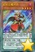 | 虹彩之魔术师 | [怪兽|效果|灵摆] 魔法师/暗 [★4] 1500/1000 8/8 ←8 【灵摆】 8→ ①：1回合1次，以自己场上1只魔法师族·暗属性怪兽为对象才能发动。这个回合那只怪兽用和对方怪兽的战斗给与对方的战斗伤害变成2倍。那之后，这张卡破坏。 【怪兽效果】 这张卡在规则上也当作「灵摆龙」卡使用。 ①：这张卡被战斗·效果破坏的场合才能发动。从卡组把1张「灵摆读阵」卡加入手卡。 |
| 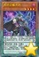 | 黑牙之魔术师 | [怪兽|效果|灵摆] 魔法师/暗 [★4] 1700/800 8/8 ←8 【灵摆】 8→ ①：1回合1次，以对方场上1只表侧表示怪兽为对象才能发动。那只怪兽的攻击力直到回合结束时变成一半。那之后，这张卡破坏。 【怪兽效果】 这张卡在规则上也当作「超量龙」卡使用。 ①：这张卡被战斗·效果破坏的场合，以自己墓地1只魔法师族·暗属性怪兽为对象才能发动。那只怪兽特殊召唤。 |
| 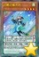 | 白翼之魔术师 | [怪兽|效果|调整|灵摆] 魔法师/风 [★4] 1600/1400 1/1 ←1 【灵摆】 1→ ①：1回合1次，可以把以自己场上的魔法师族·暗属性怪兽为对象发动的效果无效。那之后，这张卡破坏。 【怪兽效果】 这张卡在规则上也当作「同调龙」卡使用。灵摆召唤的这张卡被同调召唤使用的场合除外。 |
| 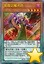 | 紫毒之魔术师 | [怪兽|效果|灵摆] 魔法师/暗 [★4] 1200/2100 1/1 ←1 【灵摆】 1→ ①：1回合1次，自己的魔法师族·暗属性怪兽进行战斗的伤害计算前才能发动。那只怪兽的攻击力直到伤害步骤结束时上升1200。那之后，这张卡破坏。 【怪兽效果】 这张卡在规则上也当作「融合龙」卡使用。 ①：这张卡被战斗·效果破坏的场合，以场上1张表侧表示的卡为对象才能发动。那张卡破坏。 |
| 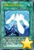 | 星霜之灵摆读阵 | [魔法|永续] 「星霜之灵摆读阵」的②的效果1回合只能使用1次。 ①：只要这张卡在魔法与陷阱区域存在，对方不能把自己场上的魔法师族怪兽作为魔法卡的效果的对象。 ②：表侧表示的「魔术师」灵摆怪兽卡从自己的怪兽区域·灵摆区域离开的场合发动。从卡组把1只「魔术师」灵摆怪兽加入手卡。 |
| 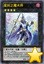 | 星刻之魔术师 | [怪兽|效果|超量] 魔法师/暗 [☆4] 2400/1200 4星「魔术师」灵摆怪兽×2 这张卡用以上记的卡为超量素材的超量召唤才能从额外卡组特殊召唤。 ①：1回合1次，把这张卡1个超量素材取除才能发动。从自己的卡组·墓地的怪兽以及自己的额外卡组的表侧表示的灵摆怪兽之中选1只魔法师族·暗属性怪兽加入手卡。 ②：1回合1次，自己的怪兽区域·灵摆区域的灵摆怪兽卡被战斗·效果破坏的场合，可以作为代替从自己卡组把1只魔法师族怪兽送去墓地。 |
| 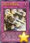 | 时空之灵摆读阵 | [陷阱|永续] 「时空之灵摆读阵」的②的效果1回合只能使用1次。 ①：只要这张卡在魔法与陷阱区域存在，对方不能把自己场上的魔法师族怪兽作为陷阱卡的效果的对象。 ②：以自己的怪兽区域·灵摆区域1张「魔术师」灵摆怪兽卡和对方场上1张卡为对象才能发动。那些卡破坏。没被这个效果把2张卡破坏的场合，可以选场上1张卡送去墓地。 |
 | 娱乐伙伴 天空魔术家 | [怪兽|效果] 魔法师/风 [★7] 2500/2000 「娱乐伙伴 天空魔术家」的②的效果1回合只能使用1次。 ①：1回合1次，自己把魔法卡发动的场合发动。这张卡的攻击力上升300。 ②：以自己场上1张永续魔法卡为对象才能发动。那张卡回到持有者手卡。那之后，可以从手卡把1张「魔术师」永续魔法卡发动。这个效果在对方回合也能发动。 ③：表侧表示的这张卡从场上离开的场合，以场上1张卡为对象才能发动。那张卡破坏。 |
 | 娱乐伙伴 天空徒弟 | [怪兽|效果] 魔法师/光 [★3] 800/800 「娱乐伙伴 天空徒弟」的①的效果1回合只能使用1次。 ①：让自己场上1只5星以上的「娱乐伙伴」怪兽回到持有者手卡才能发动。这张卡从手卡特殊召唤。这个效果在对方回合也能发动。 ②：这张卡和对方怪兽进行战斗的场合，直到伤害步骤结束时那只怪兽的效果无效化。 ③：自己场上有其他的「娱乐伙伴」怪兽存在的场合，这张卡向对方怪兽攻击的伤害计算前才能发动。那只对方怪兽破坏。 |
 | 娱乐伙伴 时事秀舞者 | [怪兽|效果] 魔法师/光 [★3] 800/1000 ①：对方场上有怪兽存在，自己场上没有怪兽存在的场合，这张卡可以从手卡特殊召唤。 ②：「娱乐伙伴」怪兽上级召唤的场合，这张卡可以作为2只的数量解放。 |
 | 娱乐伙伴 小判龙 | [怪兽|效果|灵摆] 龙/水 [★4] 1700/1000 5/5 ←5 【灵摆】 5→ ①：1回合1次，以从额外卡组特殊召唤的自己场上1只龙族怪兽为对象才能发动。这个回合，那只自己怪兽和对方怪兽进行战斗的场合，那只对方怪兽在伤害计算后除外。 【怪兽效果】 ①：只要这张卡在怪兽区域存在，这张卡以外的自己场上的龙族怪兽攻击力上升500，不会被效果破坏。 |
 | 疾行机人 56飞机 | [怪兽|效果] 机械/风 [★5] 1800/0 「疾行机人 56飞机」的①的效果1回合只能使用1次。 ①：自己场上有怪兽特殊召唤的场合才能发动。这张卡从手卡特殊召唤。这个效果的发动后，直到回合结束时自己不是风属性怪兽不能特殊召唤。 ②：这张卡召唤·特殊召唤成功的场合，以场上1只表侧表示怪兽为对象才能发动。那只怪兽的攻击力直到回合结束时下降600。 |
 | 捕食植物 蜂兰蝎 | [怪兽|效果] 植物/暗 [★3] 1200/800 「捕食植物 蜂兰蝎」的效果1回合只能使用1次。 ①：这张卡召唤·特殊召唤成功的场合，从手卡把1只怪兽送去墓地才能发动。从卡组把「捕食植物 蜂兰蝎」以外的1只「捕食植物」怪兽特殊召唤。 |
 | 捕食植物 蛇瓶草眼镜蛇 | [怪兽|效果] 植物/暗 [★3] 1000/1500 「捕食植物 蛇瓶草眼镜蛇」的效果在决斗中只能使用1次。 ①：这张卡用「捕食植物」怪兽的效果特殊召唤成功的场合才能发动。从卡组把1张「融合」魔法卡加入手卡。 |
 | 捕食植物 冬虫夏草 | [怪兽|效果] 植物/暗 [★1] 0/0 ①：自己准备阶段把墓地的这张卡除外，以自己墓地2只4星以下的「捕食植物」怪兽为对象才能发动。那些怪兽特殊召唤。这个效果的发动后，直到回合结束时自己不能通常召唤，不是融合怪兽不能特殊召唤。 |
 | 抒情歌鸲-钴尖晶雀 | [怪兽|效果] 鸟兽/风 [★1] 0/100 「抒情歌鸲-钴尖晶雀」的①的效果1回合只能使用1次。 ①：这张卡特殊召唤成功的场合才能发动。从卡组把1只鸟兽族·1星怪兽加入手卡。 ②：场上的这张卡为素材作超量召唤的风属性怪兽得到以下效果。 ●这张卡不会成为对方的效果的对象。 |
 | 抒情歌鸲-青玉燕 | [怪兽|效果] 鸟兽/风 [★1] 100/0 「抒情歌鸲-青玉燕」的①的效果1回合只能使用1次。 ①：自己场上有鸟兽族怪兽存在的场合才能发动。这张卡和1只鸟兽族·1星怪兽从手卡特殊召唤。 ②：场上的这张卡为素材作超量召唤的风属性怪兽得到以下效果。 ●这次超量召唤成功的场合，以自己墓地1只「抒情歌鸲」怪兽为对象才能发动。那只怪兽在这张卡下面重叠作为超量素材。 |
 | 抒情歌鸲-绿松石莺 | [怪兽|效果] 鸟兽/风 [★1] 100/100 「抒情歌鸲-绿松石莺」的②的效果1回合只能使用1次。 ①：自己场上没有怪兽存在的场合，这张卡可以从手卡特殊召唤。 ②：这张卡从手卡的特殊召唤成功的场合才能发动。从自己的手卡·墓地选1只「抒情歌鸲」怪兽特殊召唤。 |
 | DD 幽灵 | [怪兽|效果|调整] 恶魔/暗 [★2] 600/300 ①：这张卡被送去墓地的场合，以自己墓地1只「DD 幽灵」以外的「DD」怪兽或者1张「契约书」卡为对象才能发动。那1张同名卡从卡组送去墓地。 ②：这张卡被除外的场合，从除外的自己的卡之中以1只「DD 幽灵」以外的「DD」怪兽或者1张「契约书」卡为对象才能发动。那张卡回到墓地。 |
 | 双头共鸣者 | [怪兽|效果|调整] 恶魔/炎 [★1] 0/0 「双头共鸣者」的②的效果1回合只能使用1次。 ①：这张卡召唤·特殊召唤成功的场合，以场上1只表侧表示怪兽为对象才能发动。这个回合，那只表侧表示怪兽当作调整使用。 ②：把墓地的这张卡除外，以自己场上1只恶魔族怪兽为对象才能发动。这个回合，那只恶魔族怪兽当作调整使用。 |
 | 霸王门 零 | [怪兽|效果|灵摆] 恶魔/暗 [★7] 0/0 ←0 【灵摆】 0→ ①：自己场上有「霸王龙 扎克」存在的场合，自己受到的全部伤害变成0。 ②：1回合1次，另一边的自己的灵摆区域有「霸王门 无限」存在的场合才能发动。自己的灵摆区域2张卡破坏，从卡组把1张「融合」魔法卡加入手卡。 【怪兽效果】 ①：1回合1次，以这张卡以外的自己场上1张表侧表示的卡为对象才能发动。那张卡和这张卡破坏，把1只龙族融合怪兽或者龙族同调怪兽从额外卡组特殊召唤。这个效果特殊召唤的怪兽的攻击力·守备力变成0，效果无效化，不能作为同调·超量召唤的素材。 ②：怪兽区域的这张卡被战斗·效果破坏的场合才能发动。这张卡在自己的灵摆区域放置。 |
 | 霸王门 无限 | [怪兽|效果|灵摆] 恶魔/暗 [★7] 0/0 13/13 ←13 【灵摆】 13→ ①：自己场上有怪兽存在的场合，自己不能灵摆召唤。这个效果不会被无效化。 ②：1回合1次，自己场上有「霸王龙 扎克」存在的场合，以对方场上1只表侧表示怪兽为对象才能发动。自己基本分回复那只怪兽的攻击力的数值。 【怪兽效果】 ①：1回合1次，以这张卡以外的自己场上1张表侧表示的卡为对象才能发动。那张卡和这张卡破坏，把1只龙族超量怪兽或者龙族灵摆怪兽从额外卡组特殊召唤。这个效果特殊召唤的怪兽的攻击力·守备力变成0，效果无效化，不能作为同调·超量召唤的素材。 ②：怪兽区域的这张卡被战斗·效果破坏的场合才能发动。这张卡在自己的灵摆区域放置。 |
 | 霸王眷龙 暗黑亚龙 | [怪兽|效果|灵摆] 龙/暗 [★4] 1800/1200 5/5 ←5 【灵摆】 5→ ①：1回合1次，自己场上没有怪兽存在的场合才能发动。从卡组选1只「霸王门」灵摆怪兽在自己的灵摆区域放置。这个效果的发动后，直到回合结束时自己不是暗属性怪兽不能灵摆召唤。 【怪兽效果】 「霸王眷龙 暗黑亚龙」的①②的怪兽效果1回合各能使用1次。 ①：这张卡召唤·特殊召唤成功的场合才能发动。从卡组把1只「霸王门」灵摆怪兽加入手卡。 ②：这张卡在墓地存在，自己场上没有怪兽存在的场合才能发动。这张卡从墓地特殊召唤。 |
 | 真龙骑将 得律阿斯3世 | [怪兽|效果] 幻龙/地 [★6] 2100/2800 这张卡表侧表示上级召唤的场合，可以作为怪兽的代替而把自己场上的永续魔法·永续陷阱卡解放。 ①：上级召唤的表侧表示的这张卡从场上离开的场合才能发动。从卡组把1只「真龙」怪兽守备表示特殊召唤。 ②：只要这张卡在怪兽区域存在，这张卡以外的场上的「真龙」怪兽不会成为对方的效果的对象，不会被对方的效果破坏。 |
 | 真龙机兵 十二炼机圣 | [怪兽|效果] 幻龙/光 [★9] 3000/3000 这张卡通常召唤的场合，必须把3只怪兽解放作召唤，可以作为怪兽的代替而把自己场上的永续魔法·永续陷阱卡解放。 ①：这张卡不受原本种类（怪兽·魔法·陷阱）和为这张卡的上级召唤而解放的卡相同的卡的效果影响。 ②：上级召唤的这张卡被对方破坏的场合才能发动。地·水·炎·风属性的其中1只融合·同调·超量怪兽从额外卡组特殊召唤。 |
 | 幻煌龙 螺旋 | [怪兽|通常] 幻龙/水 [★8] 2900/2900 经历了炽烈战涡的猛龙。其负伤之躯接触古老光芒，最终完成自身的浸涡。不久，巨龙展开自己的双翅，变为称霸天涡的煌者。那位新生的煌，究竟是梦是真还是幻。 |
 | 电子光虫-LED瓢虫 | [怪兽|效果] 昆虫/光 [★3] 500/0 把这张卡作为超量召唤的素材的场合，不是昆虫族怪兽的超量召唤不能使用。 ①：1回合1次，表侧攻击表示的这张卡变成守备表示时才能发动。从卡组把1只昆虫族·3星怪兽加入手卡。 ②：场上的这张卡为素材作超量召唤的怪兽得到以下效果。 ●这张卡战斗破坏怪兽时自己从卡组抽1张。 |
 | 影灵衣巫女 艾莉娅儿 | [怪兽|效果] 念动力/水 [★4] 1000/1800 「影灵衣巫女 艾莉娅儿」的②的效果1回合只能使用1次。 ①：1回合1次，把手卡的「影灵衣」卡任意数量给对方观看才能发动。直到回合结束时，这张卡的等级上升或者下降给人观看的卡数量的数值。 ②：这张卡被效果解放的场合才能发动。从卡组把仪式怪兽以外的1只「影灵衣」怪兽加入手卡。 |
 | 霸王龙 扎克 | [怪兽|效果|融合|灵摆] 龙/暗 [★12] 4000/4000 1/1 ←1 【灵摆】 1→ ①：只要这张卡在灵摆区域存在，对方场上的融合·同调·超量怪兽不能把效果发动。 ②：1回合1次，对方在抽卡阶段以外从卡组把卡加入手卡时才能发动。那卡破坏。 【怪兽效果】 龙族的融合·同调·超量·灵摆怪兽各1只合计4只 这张卡不用融合召唤不能特殊召唤。 ①：这张卡特殊召唤成功的场合发动。对方场上的卡全部破坏。 ②：这张卡不会成为对方的效果的对象，不会被对方的效果破坏。 ③：这张卡战斗破坏对方怪兽时才能发动。从卡组·额外卡组把1只「霸王眷龙」怪兽特殊召唤。 ④：怪兽区域的这张卡被战斗·效果破坏的场合才能发动。这张卡在自己的灵摆区域放置。 |
 | 娱乐伙伴 机炮食尸鬼 | [怪兽|效果|融合] 恶魔/暗 [★8] 2900/900 「娱乐伙伴」怪兽＋5星以上的暗属性怪兽 「娱乐伙伴 机炮食尸鬼」的效果1回合只能使用1次。 ①：这张卡融合召唤成功的场合才能发动。给与对方为场上的卡数量×200伤害。这张卡用灵摆怪兽为素材作融合召唤的场合，再选对方场上1只怪兽破坏，给与对方那只怪兽的原本攻击力数值的伤害。 |
 | 抒情歌鸲-聚集夜莺 | [怪兽|效果|超量] 鸟兽/风 [☆1] 0/0 1星怪兽×2只以上 ①：这张卡的攻击力上升这张卡的超量素材数量×200。 ②：这张卡可以直接攻击，持有超量素材的这张卡在同1次的战斗阶段中可以作出最多有那个数量的攻击。 ③：1回合1次，把这张卡1个超量素材取除才能发动。直到回合结束时，自己场上的「抒情歌鸲」怪兽不会被战斗·效果破坏，自己受到的战斗伤害变成0。这个效果在对方回合也能发动。 |
 | 急袭猛禽-异邦猎鹰 | [怪兽|效果|超量] 鸟兽/暗 [☆5] 2000/2000 5星怪兽×2 ①：这张卡有超量怪兽在作为超量素材的场合，得到以下效果。 ●1回合1次，把这张卡1个超量素材取除，以对方场上1只怪兽为对象才能发动。那只怪兽破坏，给与对方那个原本攻击力数值的伤害。 ②：这张卡被对方破坏送去墓地的场合，以「急袭猛禽-异邦猎鹰」以外的自己墓地1只「急袭猛禽」超量怪兽为对象才能发动。那只怪兽特殊召唤，把这张卡在那张卡下面重叠作为超量素材。 |
 | DDD 磐石王 大流士 | [怪兽|效果|超量] 恶魔/地 [☆3] 1900/1000 恶魔族3星怪兽×2 ①：1回合1次，把这张卡1个超量素材取除，以自己场上1张「契约书」卡为对象才能发动。那张卡破坏，自己从卡组抽1张。这个效果在对方回合也能发动。 ②：这张卡和对方怪兽进行战斗的伤害计算时，把这张卡1个超量素材取除才能发动。这张卡不会被那次战斗破坏，伤害计算后那只对方怪兽破坏，给与对方500伤害。 |
 | 真龙皇 法·王·兽 | [怪兽|效果|超量] 幻龙/暗 [☆9] 3000/3000 9星怪兽×2只以上 ①：1回合1次，把这张卡1个超量素材取除，宣言1个属性才能发动。直到回合结束时，场上的表侧表示怪兽变成宣言的属性，宣言的属性的对方怪兽不能把效果发动，也不能攻击。这个效果在对方回合也能发动。 ②：只要这张卡在怪兽区域存在，自己手卡的「真龙」怪兽的效果破坏的怪兽从对方场上也能选。 |
 | 魔术师的右手 | [魔法|永续] ①：1回合1次，自己场上有魔法师族怪兽存在的场合，对方发动的魔法卡的效果无效并破坏。 |
 | 魔术师的左手 | [魔法|永续] ①：1回合1次，自己场上有魔法师族怪兽存在的场合，对方发动的陷阱卡的效果无效并破坏。 |
 | 魔术师的再演 | [魔法|永续] ①：只在这张卡在场上表侧表示存在才有1次，以自己墓地1只3星以下的魔法师族怪兽为对象才能发动。那只怪兽特殊召唤。 ②：这张卡被送去墓地的场合才能发动。从卡组把「魔术师的再演」以外的1张「魔术师」永续魔法卡加入手卡。 |
 | 超越融合 | [魔法] 不能对应这张卡的发动让卡的效果发动。 ①：支付2000基本分才能发动。融合怪兽卡决定的2只融合素材怪兽从自己场上送去墓地，把那1只融合怪兽从额外卡组融合召唤。 ②：把墓地的这张卡除外，以这张卡的效果融合召唤的1只怪兽为对象才能发动。那只怪兽的融合召唤使用过的一组融合素材怪兽从自己墓地特殊召唤。这个效果特殊召唤的怪兽的攻击力·守备力变成0，效果无效化。 |
 | 幻煌之都 帕西菲斯 | [魔法|场地] 这张卡的卡名在规则上当作「海」使用。这张卡的效果发动的回合，自己不能把效果怪兽召唤·特殊召唤。 ①：1回合1次，自己对通常怪兽1只的召唤·特殊召唤成功的场合发动。从卡组把1张「幻煌龙」卡加入手卡。 ②：自己场上没有衍生物存在，对方把魔法·陷阱·怪兽的效果发动的场合才能发动。在自己场上把1只「幻煌龙衍生物」（幻龙族·水·6星·攻/守2000）特殊召唤。 |
 | 幻煌龙的螺旋突 | [魔法|装备] 通常怪兽才能装备。「幻煌龙的螺旋突」的②的效果1回合只能使用1次。 ①：装备怪兽向守备表示怪兽攻击的场合，给与对方为攻击力超过那个守备力的数值的战斗伤害。 ②：装备怪兽给与对方战斗伤害时才能发动。从自己的手卡·卡组·墓地选1只「幻煌龙 螺旋」特殊召唤，这张卡给那只怪兽装备。那之后，可以选对方场上1只攻击表示怪兽变成守备表示。 |
 | 幻煌龙的螺旋绞 | [魔法|装备] 通常怪兽才能装备。「幻煌龙的螺旋绞」的②的效果1回合只能使用1次。 ①：装备怪兽的攻击力上升500。 ②：装备怪兽战斗破坏对方怪兽时才能发动。从自己的手卡·卡组·墓地选1只「幻煌龙 螺旋」特殊召唤，这张卡给那只怪兽装备。那之后，给与对方1000伤害。 |
 | 决斗者降临 | [魔法] 「决斗者降临」在1回合只能发动1张。 ①：自己或者对方的灵摆区域有卡存在的场合才能发动。从卡组把1只「灵摆」灵摆怪兽或者1张「灵摆」魔法·陷阱卡加入手卡。 |
 | 诀别 | [陷阱] ①：对方战斗阶段从手卡把1张魔法卡送去墓地才能发动。那次战斗阶段结束。场上的表侧表示怪兽直到回合结束时效果无效化。 |
 | 幻影骑士团 失常磁环 | [陷阱] ①：对方怪兽的攻击宣言时才能发动。那次攻击无效。那之后，这张卡变成持有以下效果的效果怪兽（战士族·暗·2星·攻/守0）在怪兽区域攻击表示特殊召唤（不当作陷阱卡使用）。 ●把这张卡以及自己场上的表侧表示的1只「幻影骑士团」怪兽或者1张「幻影」永续魔法·永续陷阱卡送去墓地才能发动。自己从卡组抽2张。这个效果在对方回合也能发动。 |
 | 常暗的契约书 | [陷阱|永续] ①：自己的灵摆区域有2张「DD」卡存在的场合，对方不能把场上的怪兽作为魔法·陷阱卡的效果的对象，不能作为上级召唤的解放，也不能作为融合·同调·超量召唤的素材。 ②：自己准备阶段发动。自己受到1000伤害。 |
 | 幻煌龙的战涡 | [陷阱] 场上有「海」存在的场合，这张卡的发动从手卡也能用。 ①：自己场上的怪兽只有通常怪兽的场合，以对方场上1张卡为对象才能发动。那张卡破坏。 ②：把墓地的这张卡除外，以自己场上1只通常怪兽为对象才能发动。那只怪兽可以装备的自己场上的全部「幻煌龙」装备魔法卡给那只通常怪兽装备。 |
 | 幻煌龙的浸涡 | [陷阱] 场上有「海」存在的场合，这张卡的发动从手卡也能用。 ①：自己场上的怪兽只有通常怪兽的场合，以对方场上1只效果怪兽为对象才能发动。那只怪兽直到回合结束时攻击力·守备力下降1000，效果无效化。 ②：把墓地的这张卡除外，以自己场上1只通常怪兽为对象才能发动。从自己的手卡·墓地选1张「幻煌龙」装备魔法卡给那只通常怪兽装备。 |
 | 破坏剑士的摇篮 | [陷阱] 「破坏剑士的摇篮」在1回合只能发动1张。 ①：从卡组把「破坏剑士的摇篮」以外的1张「破坏剑」卡和1只「巴斯达·布雷达」怪兽送去墓地才能发动。从自己的额外卡组·墓地选1只「破戒蛮龙-破坏龙」特殊召唤。这个效果特殊召唤的怪兽在下个回合的结束阶段破坏。 ②：把墓地的这张卡除外才能发动。这个回合，自己场上的「破坏剑」卡不会被战斗·效果破坏。 |
 | 幽丽的幻泷 | [陷阱] ①：可以从以下效果选择1个发动。 ●从卡组把1只幻龙族怪兽加入手卡。 ●从手卡以及自己场上的表侧表示怪兽之中把幻龙族怪兽任意数量送去墓地才能发动。自己从卡组抽出送去墓地的怪兽的数量＋1张。 |
 | 神数的神意 | [魔法] 「神数的神意」在1回合只能发动1张。 ①：从卡组把「神数的神意」以外的1张「神数」卡加入手卡。 ②：自己场上的「神数」卡被破坏的场合，可以作为代替把墓地的这张卡除外。这个效果在这张卡送去墓地的回合不能使用。 |
 | 真龙战士 点火烈·炽热 | [怪兽|效果] 幻龙/炎 [★5] 2400/1000 这张卡表侧表示上级召唤的场合，可以作为怪兽的代替而把自己场上的永续魔法·永续陷阱卡解放。 ①：1回合1次，上级召唤的这张卡存在，对方把魔法·陷阱·怪兽的效果发动时才能发动。从卡组选1张「真龙」永续魔法卡加入手卡或在自己场上发动。 |
 | 真龙导士 威风凛·少女 | [怪兽|效果] 幻龙/风 [★5] 2300/1500 这张卡表侧表示上级召唤的场合，可以作为怪兽的代替而把自己场上的永续魔法·永续陷阱卡解放。 ①：1回合1次，上级召唤的这张卡存在，对方把魔法·陷阱·怪兽的效果发动时才能发动。从卡组把1只「真龙」怪兽加入手卡。 |
 | 真龙拳士 雾动轰·铁拳 | [怪兽|效果] 幻龙/水 [★6] 2500/1200 这张卡表侧表示上级召唤的场合，可以作为怪兽的代替而把自己场上的永续魔法·永续陷阱卡解放。 ①：1回合1次，上级召唤的这张卡存在，对方把魔法·陷阱·怪兽的效果发动时才能发动。从卡组选1张「真龙」永续陷阱卡加入手卡或在自己场上发动。 |
 | 龙神阵·略图 | [魔法|场地] ①：场上的「真龙」怪兽的攻击力·守备力上升300。 ②：只要这张卡在场地区域存在，上级召唤的「真龙」怪兽在1回合各有1次不会被战斗破坏。 ③：1回合1次，自己主要阶段才能发动。选这张卡以外的自己的手卡·场上1张卡破坏，从卡组把1张「真龙」卡加入手卡。 |
 | 真龙的继承 | [魔法|永续] 「真龙的继承」的①②③的效果1回合各能使用1次。 ①：自己主要阶段才能发动。自己从卡组抽出这个回合从场上送去墓地的「真龙」卡种类（怪兽·魔法·陷阱）的数量。 ②：自己主要阶段才能发动。把1只「真龙」怪兽表侧表示上级召唤。 ③：这张卡从魔法与陷阱区域送去墓地的场合，以场上1张魔法·陷阱卡为对象才能发动。那张卡破坏。 |
 | 真龙皇的复活 | [陷阱|永续] 「真龙皇的复活」的①②③的效果1回合各能使用1次，作为①②的效果在同一连锁上不能发动。 ①：以自己墓地1只「真龙」怪兽为对象才能发动。那只怪兽守备表示特殊召唤。这个效果的发动后，直到回合结束时自己不能把怪兽特殊召唤。 ②：对方主要阶段才能发动。把1只「真龙」怪兽表侧表示上级召唤。 ③：这张卡从魔法与陷阱区域送去墓地的场合，以场上1只怪兽为对象才能发动。那只怪兽破坏。 |
 | 真龙凰 玛丽亚姆内 | [怪兽|效果] 幻龙/风 [★9] 2700/2100 「真龙凰 玛丽亚姆内」的①②的效果1回合各能使用1次。 ①：自己主要阶段才能发动。从这张卡以外的手卡以及自己场上的表侧表示怪兽之中把包含风属性怪兽的2只怪兽破坏，这张卡从手卡特殊召唤，把2只风属性怪兽破坏的场合，可以从对方卡组上面把4张卡除外。 ②：这张卡被效果破坏的场合才能发动。从卡组把1只风属性以外的幻龙族怪兽加入手卡。 |
常见问题
Q.某张卡有BUG！
A.请到页面下方留言反馈，或联系233服QQ群里的尸体233（QQ：921439818）。
Q.卡片右下角的黄色星星是什么意思？
A.表示那张卡暂未有实卡，是先行卡。其卡片密码暂时使用临时密码（1开头的9位数）。
这种卡需要在23333端口才能使用。此外部分使用同样密码体系的服务器（不包括Checkmate）也可以使用。
实卡发售后，对应的带星星的先行卡会失效，请更新游戏，来获取正式的版本。
Q.卡片右下角的绿色加号是什么意思？
A.表示那张卡已有实卡但YGOPRO的国内官方版本暂未更新，是本补丁增加的卡片。其卡片密码是正式密码。
这种卡在233端口更新前只能在23333端口使用。但其他更新速度较快的服务器（包括Checkmate）一般也可使用。
一般这种卡不久就会正式更新到233服，请关注公告，更新后请下载YGOPRO的正式更新来获取那些卡。
Q.为什么安装了最新的先行卡补丁仍然没有某些卡？
A.本补丁只包含先行卡，不包含已经正式更新的卡。
请下载YGOPRO的正式更新来获取那些卡。
Q.为什么我更新先行卡补丁之后反而有卡消失了？
A.因为那些卡已经不再是先行卡了，本补丁不再包含它们。
请下载YGOPRO的正式更新来获取那些卡。
Q.安装后没有新卡？
A.本补丁附带新卡列表的卡组。
请确保你把文件解压到了游戏文件夹里，而不是新建了一个文件夹。
电脑版需要重启游戏才能重新载入数据库。
手机版需要自定义数据库，详见使用方法。
Q.安装后新卡没有卡图？
A.请确保你解压出来了压缩包里所有文件，不能只解压1个文件。
Q.手机版找不到sdcard文件夹？
A.部分手机可能位于storage或mnt文件夹里。
Q.手机版提示没有权限？
A.同上，换个文件夹试试。
Q.某张卡不能用，提示无效卡组？
A.本补丁的最新版只能与23333端口完美兼容。
请下载YGOPRO的正式更新，并更新先行卡补丁到最新版，把端口改为23333，才能正常使用先行卡。
Q.搜索卡片时发现有重复卡片？
A.因为本补丁是先行卡补丁，正式更新的卡片可能会与本补丁的卡片重复。删除或更新本补丁即可。
Q.电脑版怎么删除补丁？
A.删除expansions文件夹或其中pre-release.cdb即可。
Q.手机版怎么删除补丁？
A.点自定义卡片数据库下面的重置卡片数据库。
如果你打过其他的补丁，还需要再自定义一次数据库，选择cards.cdb。